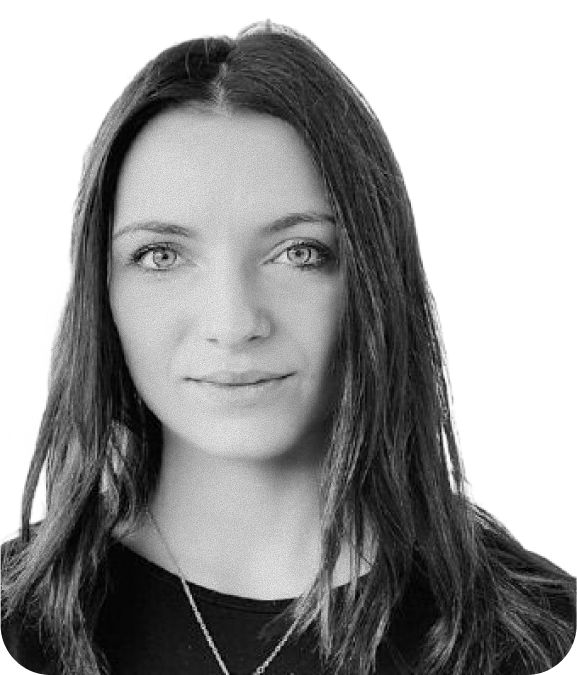
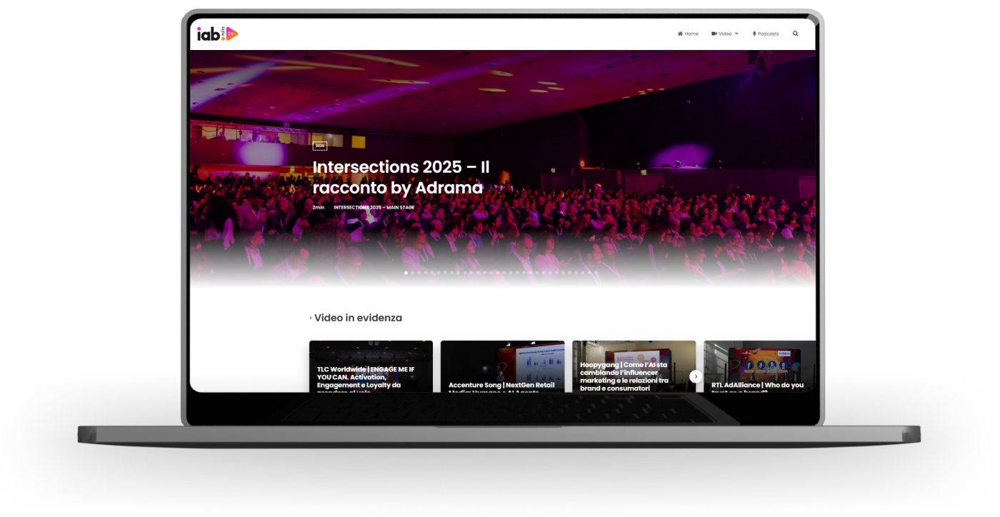
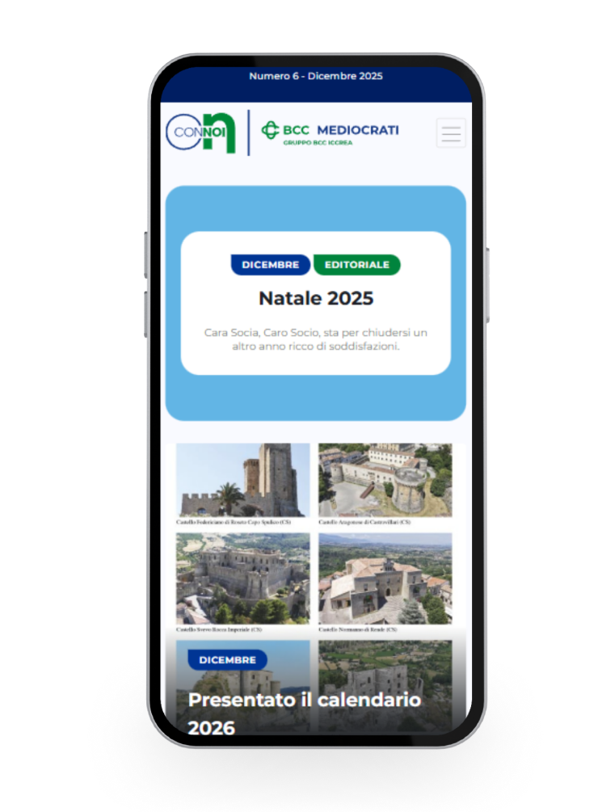
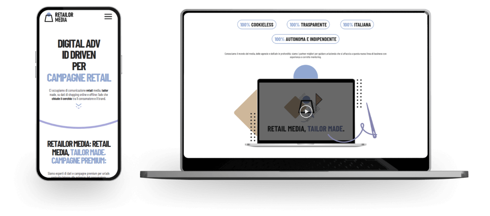
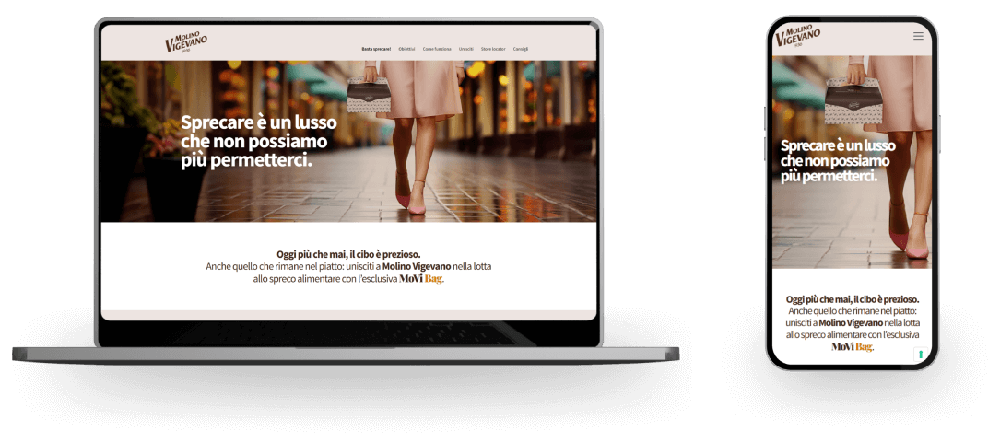
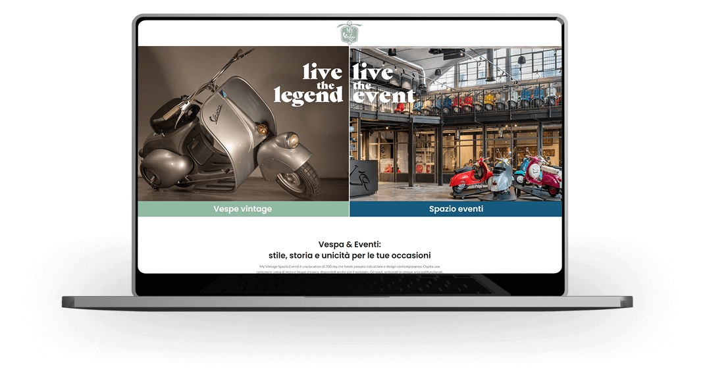

Progetto e sviluppo interfacce web chiare, usabili e ottimizzate per i motori di ricerca. Realizzo siti WordPress, piattaforme editoriali digitali e landing page, curandone il design responsive, la struttura frontend ed il posizionamento SEO On-Page.

Sviluppatrice Frontend, Web Designer e SEO Specialist. Realizzo siti web performanti su WordPress e codice custom, unendo la cura per la User Experience (UX/UI) a solide ottimizzazioni SEO On-Page e tecniche. Mi occupo dell'intero ciclo di vita del sito: dall'architettura delle informazioni allo sviluppo responsive, fino al posizionamento organico sui motori di ricerca.
Audit tecnico, ricerca keyword (long-tail) e ottimizzazione SEO On-Page su piattaforme WordPress e siti custom. Intervento su meta-tag, dati strutturati e velocità di caricamento per il miglioramento del posizionamento organico.
Piattaforma video per raccogliere e organizzare i contenuti degli eventi IAB (talk, conferenze, panel), strutturata come una vera e propria web TV.

Trasformazione del magazine cartaceo della BCC Mediocrati in una piattaforma digitale completa, pensata per ospitare, organizzare e valorizzare i contenuti editoriali online.

Sito corporate per Retailor Media, sviluppato from scratch per presentare l’azienda, i servizi e il posizionamento nel settore retail media e advertising data-driven.

Landing page sviluppata from scratch per una campagna di sensibilizzazione contro lo spreco alimentare.

Sviluppo e restyling per il noleggio di moto d’epoca e promozione di uno spazio eventi a Milano. Catalogo consultabile abbinato ai servizi offerti.

Sviluppo e codifica HTML responsive di Direct Email Marketing e template newsletter ottimizzati per i principali client di posta (MagNews, Salesforce).
Progettazione e animazione di banner display e formati Rich Media interattivi per campagne pubblicitarie digitali.
Interventi verticali di bug fixing, risoluzione conflitti CSS/JS e personalizzazioni avanzate di layout su Elementor, WPBakery e Divi.